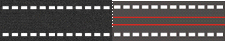

Назва розділу 34 в редакції Постанови КМ № 136 від 06.03.2013}
1. Горизонтальна розмітка
Лінії горизонтальної розмітки мають білий колір. Синій колір має лінія 1.1, якщо нею позначаються майданчики для паркування, відведені на проїзній частині. Жовтий колір мають лінії 1.4, 1.10.1, 1.10.2, 1.17, а також лінія 1.2, якщо нею позначаються межі смуги для руху маршрутних транспортних засобів. Червоно-білий колір мають лінії 1.14.3-1.14.5, 1.15. Оранжевий колір мають лінії тимчасової розмітки.
Розмітка 1.25-1.28 дублює зображення знаків.
Горизонтальна розмітка має таке значення:
1.1
1.1 (вузька суцільна лінія) - поділяє транспортні потоки протилежних напрямків і позначає межі смуг руху на дорогах; позначає межі проїзної частини, на які в'їзд заборонено; позначає межі місць стоянки транспортних засобів, майданчиків для паркування і край проїзної частини доріг, не віднесених за умовами руху до автомагістралей;
1.2
1.2 (широка суцільна лінія) - позначає край проїзної частини на автомагістралях або межі смуги для руху маршрутних транспортних засобів. У місцях, де на смугу маршрутних транспортних засобів дозволено заїзд іншим транспортним засобам, ця лінія може бути переривчастою;
1.3
1.3 - поділяє транспортні потоки протилежних напрямків на дорогах, які мають чотири і більше смуг руху;
1.4
1.4 - позначає місця, де заборонено зупинку та стоянку транспортних засобів. Застосовується самостійно або в поєднанні із знаком 3.34 і наноситься біля краю проїзної частини або по верху бордюру;
1.5
1.5 - поділяє транспортні потоки протилежних напрямків на дорогах, які мають дві або три смуги; позначає межі смуг руху за наявності двох і більше смуг, призначених для руху в одному напрямку;
1.6
1.6 (лінія наближення - переривчаста лінія, в якій довжина штрихів утричі перевищує проміжки між ними) - попереджає про наближення до розмітки 1.1 або 1.11, яка поділяє транспортні потоки протилежних або попутних напрямків;
1.7
1.7 (переривчаста лінія з короткими штрихами і рівними їм проміжками) - позначає смуги руху в межах перехрестя;
1.8
1.8 (широка переривчаста лінія) - позначає межу між перехідно-швидкісною смугою і основною смугою проїзної частини (на перехрестях, перехрещеннях доріг на різних рівнях, у зоні автобусних зупинок тощо);
1.9
1.9 - позначає межі смуг руху, на яких здійснюється реверсивне регулювання; поділяє транспортні потоки протилежних напрямків (при вимкнених реверсивних світлофорах) на дорогах, де здійснюється реверсивне регулювання;
1.10.1
1.10.2
1.10.1 і 1.10.2 - позначають місця, де заборонено стоянку. Застосовується самостійно або разом із знаком 3.35 і наноситься біля краю проїзної частини або по верху бордюру;
1.11
1.11 - поділяє транспортні потоки протилежних або попутних напрямків на ділянках доріг, де перестроювання дозволено лише з однієї смуги; позначає місця, призначені для розвороту, в'їзду і виїзду з майданчиків для стоянки тощо, де рух дозволено лише в один бік;
1.12
1.12 (стоп-лінія) - позначає місце, де водій повинен зупинитися за наявності знака 2.2 або при сигналі світлофора чи регулювальника, що забороняє рух;
1.13
1.13 - позначає місце, де водій повинен у разі потреби зупинитися і дати дорогу транспортним засобам, що рухаються по перехрещуваній дорозі;

1.14.1, 1.14.3, 1.14.4 ("зебра", у тому числі червоно-білого кольору) - позначають нерегульований пішохідний перехід; розміткою 1.14.3 позначається пішохідний перехід з підвищеною вірогідністю виникнення дорожньо-транспортних пригод; розміткою 1.14.4 позначається місце переходу сліпих пішоходів;

1.14.2, 1.14.5 - позначають пішохідний перехід, де рух регулюється світлофором; розміткою 1.14.5 позначається місце переходу сліпих пішоходів;
1.15
1.15 - позначає місце, де велосипедна доріжка перетинає проїзну частину;
1.16.1
1.16.2
1.16.3
1.16.1-1.16.3 - позначає напрямні острівці в місцях поділу, розгалуження або злиття транспортних потоків;

1.16.4
1.16.4 - позначає острівці безпеки;
1.17
1.17 - позначає зупинки маршрутних транспортних засобів і таксі;
1.18
1.18 - показує дозволені на перехресті напрямки руху по смугах. Застосовується самостійно або в поєднанні із знаками 5.16, 5.18; розмітка із зображенням тупика наноситься для зазначення того, що поворот на найближчу проїзну частину заборонено; розмітка, яка дозволяє поворот ліворуч з крайньої лівої смуги, дозволяє також розворот;
1.19
1.19 - попереджає про наближення до звуження проїзної частини (ділянки, де зменшується кількість смуг руху в даному напрямку) або до лінії розмітки 1.1 чи 1.11, яка поділяє транспортні потоки протилежних напрямків. У першому випадку може застосовуватися в поєднанні із знаками 1.5.1-1.5.3;
1.20
1.20 - попереджає про наближення до розмітки 1.13;
1.21
1.21 (напис "STOP") - попереджає про наближення до розмітки 1.12, коли вона застосовується в поєднанні із знаком 2.2;
1.22
1.22 - попереджає про наближення до місця, де встановлено пристрій примусового зниження швидкості руху транспортних засобів;
1.23
1.23 - показує номер дороги (маршруту);
1.24
1.24 - позначає смугу, призначену для руху лише маршрутних транспортних засобів.
1.25
1.25 - дублює зображення знака 1.32;
1.26
1.26 - дублює зображення знака 1.39;
1.27
1.27 - дублює зображення знака 3.29;
1.28
1.28 - дублює зображення знака 5.38;
1.29
1.29 - позначає доріжку для велосипедистів;
1.30
1.30 - позначає місця стоянки транспортних засобів, які перевозять інвалідів чи на яких установлено розпізнавальний знак "Інвалід".
Лінії 1.1 і 1.3 перетинати забороняється. Якщо лінією 1.1 позначено місце стоянки, майданчик для паркування або край проїзної частини, суміжний з узбіччям, цю лінію перетинати дозволяється.
Як виняток, за умови забезпечення безпеки дорожнього руху, дозволяється перетинати лінію 1.1 для об'їзду нерухомої перешкоди, розміри якої не дають змоги здійснити її безпечний об'їзд, не перетинаючи цю лінію, а також обгону поодиноких транспортних засобів, що рухаються із швидкістю менше 30 км/год.
Лінію 1.2 дозволяється перетинати в разі вимушеної зупинки, якщо цією лінією позначено край проїзної частини, суміжний з узбіччям.
Лінії 1.5-1.8 перетинати дозволяється з будь-якого боку.
На ділянці дороги між реверсивними світлофорами лінію 1.9 дозволяється перетинати, якщо вона розташована праворуч від водія.
При ввімкнених сигналах зеленого кольору у реверсивних світлофорах лінію 1.9 дозволяється перетинати з будь-якого боку, якщо вона поділяє смуги, по яких рух дозволено в одному напрямку. У разі вимкнення реверсивних світлофорів водій повинен негайно перестроїтися праворуч за лінію розмітки 1.9.
Лінію 1.9, що розміщена ліворуч, при вимкнених реверсивних світлофорах перетинати забороняється. Лінію 1.11 дозволяється перетинати тільки з боку її переривчастої частини, а з боку суцільної - лише по завершенні обгону чи об'їзду перешкоди.
2. Вертикальна розмітка
Смуги вертикальної розмітки мають чорно-білий колір. Червоно-білий колір мають смуги 2.3. Жовтий колір має лінія 2.7.
Вертикальна розмітка позначає:
2.1
2.1 - торцеві частини штучних споруд (парапетів, опор освітлення, шляхопроводів та ін.);
2.2
2.2 - нижній край штучної споруди;
2.2
2.3 - вертикальні поверхні щитів, які встановлюють під знаками 4.7-4.9, чи початкові або кінцеві елементи дорожніх огороджень. Нижній край смуг розмітки позначає бік, з якого необхідно об'їжджати перешкоду;
2.4
2.4 - напрямні стовпчики;
2.5
2.5 - бокові поверхні огороджень доріг на заокругленнях малого радіуса, крутих спусках, інших небезпечних ділянках;
2.6
2.6 - бордюри напрямного острівця та острівця безпеки;
2.7
2.7 - бордюри в місцях, де заборонено стоянку транспортних засобів.
{Розділ 34 в редакції Постанови КМ № 111 від 11.02.2013}